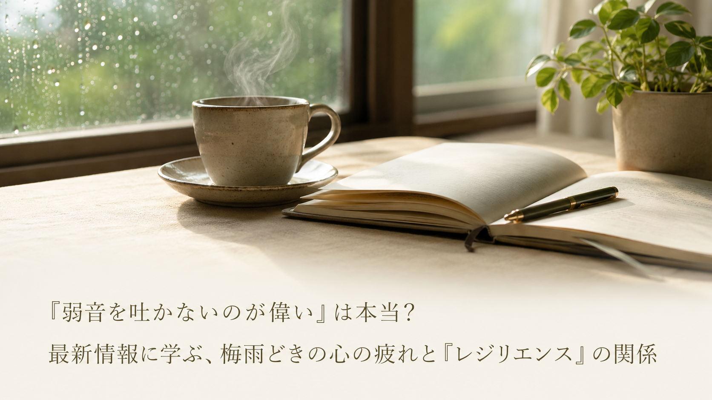

「弱音を吐かないのが偉い」は本当？最新情報に学ぶ、梅雨どきの心の疲れと『レジリエンス』の関係
「もっと頑張らなきゃ」「弱音を吐いてはいけない」——そう自分に言い聞かせながら毎日を過ごしている方は少なくありません。2026年6月、セルフケアに関する情報発信を行う企業から、祝日のない6月や梅雨の時期に心身へのストレスが蓄積しやすい理由と、心が疲れたときに大切にしたい考え方についての情報が発信されました。今回は中高年の方にも役立つ視点として、そのポイントをご紹介します。

紹介されている「梅雨どきの心の疲れ」という視点
- 梅雨の時期は日照時間の減少や気圧の変化により、心身にストレスが蓄積しやすいタイミングだと説明されている。祝日が少ない6月は、負担が積み重なっていることに気づきにくい季節でもあるとされています。
- 頑張り屋な人ほど「弱音を吐いてはいけない」と考えがちで、心が限界に近づいていることに自分で気づきにくいと指摘されている。気力がわかない、人と会うのが億劫になるといった変化は、無意識のうちに自分を守ろうとするサインだと説明されています。
- そうしたサインは弱さの表れではなく、心を大切にするための気づきの入り口だと位置づけられている。「少し疲れているのかもしれない」と受け止めること自体が、回復への第一歩になると紹介されています。
中高年の私たちが意識したいこと
この情報が伝えているのは、我慢や忍耐を重ねることが常によいとは限らない、という視点です。中高年になると、家庭や仕事で責任ある役割を担う場面が増え、「自分が頑張らなければ」と感じやすいともいわれています。日々の生活の中では、次のような一般的に知られている習慣が、心を整える助けになるとされています。
- 心当たりのある疲れを感じたときは、信頼できる人に「少し話を聞いてもらえる？」と声をかけてみる
- 特別なことでなくても、十分な睡眠や朝の光を浴びる時間など、自分を労わる習慣を意識的に取り入れる
- 気分の落ち込みが長く続く、日常生活に支障が出るなど気になる状態が続く場合は、無理をせず専門家に相談する
※上記は一般的なセルフケアの視点としてよく紹介される内容であり、特定の症状の改善や治療を保証するものではありません。心身の不調が続く場合は、医療機関や専門家にご相談ください。
本記事は、撫子Plus株式会社が2026年6月11日に発表したプレスリリース「祝日ゼロ・気圧の乱れで疲れやすい6月。頑張りすぎて心が折れそうなあなたへ贈る『レジリエンス』の育て方」の内容を要約・紹介したものです。詳しい内容は出典元をご確認ください。
出典：撫子Plus株式会社 プレスリリース（アットプレス配信、2026年6月11日）
出典：撫子Plus株式会社 プレスリリース（アットプレス配信、2026年6月11日）
本記事は健康に関する一般的な情報提供を目的としたものであり、医学的な診断・治療・予防を目的としたものではありません。記載内容は出典元の見解の要約であり、当社（株式会社BISII）独自の見解や、当社が販売する製品の効果を示すものではありません。気になる症状がある場合は、医療機関へご相談ください。
当社では、日々のコンディショニングをサポートする空間電位ケア機器「DENBA Health」をご紹介しています。
DENBA Healthについて見る最終更新日：2026年7月1日